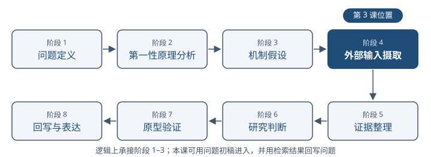
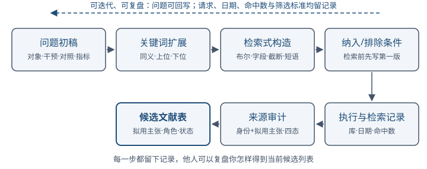
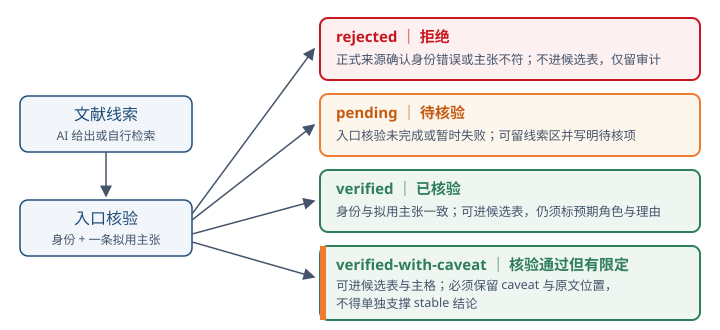
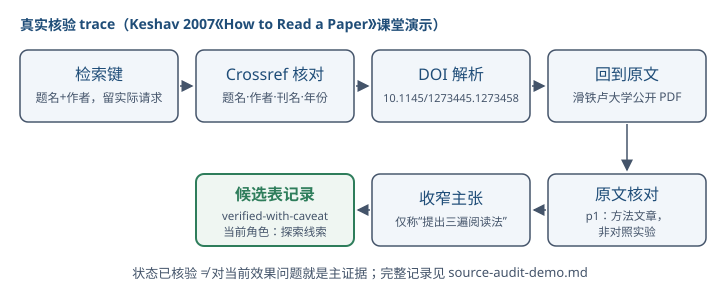

第三讲｜文献检索与证据角色¶
导读¶
第 1 课指出 AI 可以参与几乎所有科研动作，但"完整产物"不等于"科研成立"。第 2 课把这条底线写进了权限矩阵、伦理清单和 AI 使用记录。从本课起，课程进入"文献、证据与问题"模块（第 3-6 课），对应研究链路阶段 1-5。本课聚焦阶段四"外部输入摄取"；第 4-5 课逐步进入阶段五"证据整理"，第 6 课再用这些外部证据回写问题定义与第一性原理分析。
文献检索不是"搜得越多越好"。一个常见失败是：研究者输入一个宽泛主题，得到一份结构完整、带引用的 AI 综合报告，就把它当成证据基础。问题是：
- 报告里的论文是否真实存在？
- 标题、作者、年份、DOI 是否与原文一致？
- 原文研究的任务、设置和限定条件是什么？
- 它在当前项目里支持什么、不能支持什么？
如果这些没有被处理，再多文献也只是"外部输入候选"，不能自动成为证据。本课的目标是把检索过程变成可复盘的方法，并给每条材料标明它在论证里扮演什么角色。
学习目标¶
完成本讲后，你应该能够：
- 从一个研究问题生成可复盘的关键词、检索式和纳入/排除条件；
- 区分主证据、补充证据、对比证据与探索线索；
- 对 AI 检索结果执行回原文核验，并记录核验状态；
- 为自己的项目建立筛选记录和候选文献表，标注预期证据角色、筛选理由与核验状态；
- 说明 AI 输出为何只能作为线索，不能单独成为证据。
本课的输入与去向¶
| 上游输入 | 本课处理 | 下游去向 |
|---|---|---|
| 第 2 课准备的公开问题初稿、3–5 个关键词、一项来源或网络边界 | 检索式、筛选记录、入口核验、候选文献表 | 第 4 课选取已完成入口核验的论文建精读卡；第 5-6 课继续整理证据并回写问题 |
八阶段图表示方法上的逻辑关系，不等于授课顺序。本课使用可修改的问题初稿启动检索，检索结果可以反过来收窄或改写问题，每次改动都要保留版本与理由。
一、外部输入摄取在研究链路中的位置¶
八阶段研究链路中，阶段四"外部输入摄取"在逻辑上承接问题定义、第一性原理和机制假设，向阶段五"证据整理"输出材料。学生此时不必已经完成正式机制假设；本课先用问题初稿和拟用主张寻找可能支持、反驳或限定它们的材料。

图注：来源角色＝自绘教学结构图；出处＝据
course/curriculum.md八阶段研究链路定义绘制；许可＝自绘，无版权依赖；脱敏状态＝不适用
外部输入不只有论文。它还包括：
| 类型 | 例子 | 常见用途与核验重点 |
|---|---|---|
| 同行评议论文 | 期刊、会议正式论文 | 核对研究任务、设置、主张、证据与限定 |
| 经典书籍选章 | 方法论、统计、设计教材 | 核对版本、章节、方法主张和适用范围 |
| 正式规范 | PRISMA、ACM Badging、伦理提醒 | 核对发布机构、版本、适用对象与时效 |
| 上游代码与数据集仓库 | GitHub commit、数据卡片 | 核对仓库身份、commit、许可、数据版本与复现条件 |
| 官方文档与标准 | 工具、协议、API 文档 | 核对官方身份、版本、发布日期和适用条件 |
| 工程文章、博客、issue、访谈 | 厂商工程文、issue 失败记录 | 先作线索，再核对责任主体、上下文、版本和可追溯性 |
| AI 生成的搜索结果或摘要 | 模型给出的候选列表 | 仅作发现线索，逐项回到正式来源 |
来源类型本身不自动决定可信度，也不自动决定证据角色。证据角色必须相对于一个具体问题或拟用主张判断。本课课堂工件聚焦学术文献；代码、数据、规范和工程材料先保留为外部线索，后续按对应对象的版本、许可和内容规则核验。
课程证据标准（见 AGENTS.md）：普通事实陈述应注明来源；关键结论至少绑定一项可核验的直接证据；标记为
stable的结论原则上需要两项相互独立的证据；存在冲突证据时必须呈现冲突和取舍理由。
二、从研究问题到检索式¶

图注：来源角色＝自绘教学结构图；出处＝据本课 §二 检索方法链绘制；许可＝自绘，无版权依赖；脱敏状态＝不适用
1. 先写可检索的问题初稿¶
最常见的错误是带着一个主题词直接搜索。一个主题词例如"AI 辅助论文阅读"，可以指向工具测评、用户研究、教育应用、模型评测或方法论文，范围不清会让检索结果无法支撑任何具体主张。
先写一个能够驱动第一轮检索的问题初稿（第 6 课再系统定义问题）。这不是提前定稿；它只需给出：
- 对象与场景：在什么任务上、对什么材料；
- 干预或观察对象：改变了什么、观察什么；
- 比较条件：与什么对照；
- 结果指标：用什么度量。
示例（贯穿第 1 课案例）：
在需要逐条核验引用的计算机论文阅读任务中，结构化阅读卡是否降低 AI 摘要的限定条件遗漏率？
从这个问题可以抽出可检索的关键词集合：论文阅读、结构化阅读、AI 摘要、引用核验、限定条件、遗漏率。每一个词都对应问题里的一个组成部分。
如果检索结果太少、全部不可比或暴露了新术语，回写问题初稿和关键词网，并记录修改理由。
2. 关键词扩展¶
把每个核心词扩展为同义、上位、下位和相关词，形成检索词网：
| 核心词 | 同义/相关 | 上位 | 下位 |
|---|---|---|---|
| 结构化阅读卡 | reading template, reading card, structured note | 论文阅读方法 | 三遍阅读法、阅读卡字段 |
| AI 摘要 | LLM summary, AI-generated abstract | 自动摘要 | GPT-4 摘要、Claude 摘要 |
| 限定条件 | limitation, scope, boundary condition | 适用边界 | 数据集限定、模型限定 |
| 遗漏率 | omission rate, coverage | 评价指标 | 召回率、字段缺失率 |
扩展词的目的是让检索式既不漏掉相关表达，也不因一个固定词错过另一种提法。扩展来源可以是：已有论文的 keywords 字段、综述的术语表、AI 给出的候选术语（只作线索，需回原文核验）。
3. 检索式构造¶
把关键词组合成检索式。常用元素：
- 布尔算子：
AND（同时出现）、OR（任一出现）、NOT（排除，慎用，易误删相关项）； - 字段限定：
title、abstract、keywords、MeSH； - 截断与通配：
comput*匹配 computing、computation； - 引号短语：
"language model"强制短语匹配； - 时间与文献类型限定：同行评议论文、预印本、年份范围。
一个最小检索式示例（英语，用于期刊库）：
("reading card" OR "reading template" OR "structured reading")
AND ("AI summary" OR "LLM summary" OR "AI-generated abstract")
AND ("limitation" OR "scope" OR "boundary")
不同数据库的字段名、截断符和布尔语法不完全相同。记录应保留实际数据库中执行的精确检索式，而不只保留这个概念模板。
检索式应记录下来，使他人可以复盘你怎样得到当前结果。检索记录至少包括：库（如 Scopus、Web of Science、Google Scholar、ACM DL、arXiv）、检索式、时间范围、检索日期、命中数、纳入和排除标准、纳入数。
4. 纳入与排除条件¶
纳入和排除条件在检索前先写第一版，检索中根据结果调整。常见维度：
- 时间范围：是否限制到近 5 年或某一方法兴起之后；
- 文献类型：是否只纳入同行评议论文，预印本和综述如何处理；
- 语言：是否限制英语（说明理由，并记录可能造成的语言偏倚）；
- 研究类型：实证研究、方法研究、案例研究、综述；
- 相关性：与当前问题或拟用主张的对应程度。
排除一项论文时应记录理由（例如"非同行评议"、"任务设置与本项目不同"），这使后续复盘和同伴互查可以判断筛选是否公平。
5. 检索流程的人机分工¶
上述每一步都可以由 AI 起草和执行，但决定权在人。最小分工如下：
| 环节 | AI 可起草/执行 | 人工决定 |
|---|---|---|
| 问题初稿 | 把宽泛主题改写为问题初稿 | 问题是否定稿（定稿权属于人；版本保留，不覆盖旧版） |
| 关键词扩展 | 给出同义、上位、下位与候选术语 | AI 候选只作线索，回正式来源核验后才进检索式 |
| 分支框架 | 凭记忆或词频信号划分分支 | 框架须用领域数据校验；被质疑时留档并重查 |
| 检索式与执行 | 写出各库实际语法、执行检索、保存原始响应 | 纳入/排除条件第一版与每次改式的认可 |
| 入口核验 | 身份层对齐、拟用主张定位、caveat 草稿 | 核验状态定级（verified / verified-with-caveat / rejected） |
| 筛选与角色 | 给出筛选建议与带理由的角色建议 | 筛选决定（纳入/排除/仅留审计）与角色改标确认 |
教师 MI 检索 trace 是这套分工的真实实例：agent 起草了分支框架、词频校验、检索式、执行与身份核对，其凭记忆给出的 11 个锚点中 6 个身份不符被当场抽查发现；教师质疑后又有基准集自评轮暴露命中率 4/22，补入元层分支与双轨检索（见 mi-search-trace-demo.md §3、§6、§10）。分工的含义不是"AI 不可信所以全都自己做"，也不是"AI 可以全自动"，而是：AI 出草稿与线索，人做质疑与决定，且全程留可复盘记录。
三、证据角色¶
文献数量多不等于证据充分。证据角色回答"这条材料相对于当前问题或拟用主张能做什么"。本课采用四种证据角色，作为候选文献表的标准标注：
| 角色 | 定义 | 在论证中能做什么 | 不能做什么 |
|---|---|---|---|
| 主证据 | 在可比条件下直接支持或反驳当前问题或拟用主张 | 支持核心主张 | 不能单独支撑外推到其他场景 |
| 补充证据 | 从不同来源、测量或路径补充支持同一主张 | 提供独立性 | 不能替代主证据回答核心因果问题 |
| 对比证据 | 提供替代解释、竞争假设或反例 | 暴露当前解释的边界 | 不能因为相反就自动推翻主证据 |
| 探索线索 | 帮助发现关键词、问题、方法定义或失败模式，但尚未直接回答当前问题 | 指向下一步检索或问题收敛 | 即使已核验，也不能单独支撑当前核心结论 |
几个要点：
- 一条材料可以同时承担多个角色，但每个角色都要写明对应问题或拟用主张。本课先标"预期证据角色"，第 4-5 课经精读和证据整理后可修正。
- "独立"不等于两个不同网页。两篇互相转载的文章不是两项独立证据；同一代码路径运行两次也未必构成独立验证。独立性应来自来源、测量、重复实验、对照、消融或分析路径的实质差异。
- 冲突证据必须呈现。如果一篇论文支持当前假设、另一篇反对，支持项与反对方都要保留。
- AI 生成的搜索结果、摘要、引文本身只能作为探索线索。在文献身份和拟用主张被人工核验、且相对于当前问题的角色理由成立前，它不能改标为主证据、补充证据或对比证据。
与第 1 课的连接：第 1 课说"AI 输出可以是检索线索、阅读地图、候选假设、修改建议、执行动作与日志，成为证据或结论前必须回到原文、数据或实验"。本课把"检索线索"这条具体化。
角色转换路径¶
证据角色不是固定的，但转换有条件、不自动发生。一条材料从探索线索转为主证据、补充证据或对比证据，需要经过四步：
- 问题收敛：出现明确的参照问题或拟用主张。没有参照物时，角色只能标"待问题收敛"；
- 拟用主张层核验：至少一条拟用主张回原文核对一致，核验状态升到
verified或verified-with-caveat（§四·3）； - AI 起草建议：AI 可以给出角色建议与理由，但建议本身只是线索；
- 人工确认改标：人工确认参照问题与理由成立后，角色才能改标。
本课先标"预期证据角色"，第 4-5 课经精读和证据整理后可按此路径修正角色。当前课程材料尚无"探索线索提升为主证据"的完整真实示例；教师 MI trace 的 36 条线索因研究问题未收敛而全部停留在探索线索（见 mi-search-trace-demo.md §5），这本身就是纪律演示：没有参照问题，不指认角色。
角色、状态和决定是三件事¶
| 维度 | 它回答什么 | 本课字段 |
|---|---|---|
| 预期证据角色 | 它相对于哪个问题或拟用主张可能起什么作用？ | 主证据 / 补充证据 / 对比证据 / 探索线索 |
| 核验状态 | 文献身份和拟用主张核验到哪一步？ | pending / verified / verified-with-caveat / rejected |
| 筛选决定 | 它是否保留在当前候选集？ | 纳入 / 排除 / 仅留审计 |
一篇真实且已核验的论文，对当前问题仍可能只是探索线索；一篇与问题高度相关但尚未回原文的论文，仍应保持 pending。第 2 课的 draft / review / approved / stable 描述整个研究工件的成熟度，与本课的文献核验状态也不是同一维度。
四、AI 检索结果的入口核验¶
1. 为什么要回原文¶
生成式模型可以输出结构完整、带引用的报告，但已知会出现：
- 虚构文献：题名、作者、DOI 不存在或拼装；
- 张冠李戴：把 A 论文的方法写成 B 论文的结论；
- 过度概括：把"在数据集 X 上降低"写成"消除"；
- 限定条件丢失：忽略任务、设置、样本和边界；
- 来源不可追溯：给出链接但链接失效或指向不同内容。
因此，AI 给出的文献列表只能作为候选，必须逐条回原文核验。
2. 入口核验与精读移交¶
第 3 课的入口核验需要完成两层：
- 身份层：论文是否真实存在？题名、作者、年份、期刊或会议、DOI 或其他稳定标识是否能在正式来源核验一致？
- 拟用主张层：先写明准备用这篇文献支持什么，再回到至少一个原文位置，核对任务、设置、措辞强度和必要限定。
入口核验只确保一条拟用主张可以安全进入候选表。第 4 课继续核对论文的多条主张、原文位置、指标、对照、样本、贡献和局限，并建立完整阅读卡。本课未完成的深度项应写入"待精读移交项"，不在入口核验中推测补齐。
只完成身份层时，核验状态保持 pending，并注明"身份已核，拟用主张待核"。预期证据角色默认为"探索线索"，经人工确认后才能改为其他角色。
3. 四态与进入规则¶
| 状态 | 含义 | 候选表与证据主格规则 |
|---|---|---|
pending |
身份层或拟用主张层尚未完成 | 可留在候选表线索区，必须写明已核与待核项；不进证据地图主格或综述草稿 |
verified |
书目信息和至少一条拟用主张与原文一致 | 可进候选表与证据主格，仍需标对应问题、预期证据角色和纳入理由 |
verified-with-caveat |
书目信息和拟用主张与原文一致，但存在范围、方法、版本或措辞限定 | 可进候选表与证据主格，必须保留 caveat、原文位置和允许主张；不得单独支撑 stable 结论 |
rejected |
正式来源确认文献不存在、身份错误或拟用主张与原文不符 | 不进候选表或证据主格；仅保留在审计记录 |
verified-with-caveat 不是“大概正确”。它必须同时保留限定、原文位置和允许使用的收窄主张。
DOI 缺失不等于文献不存在；网络超时、限流或 DOI 解析器暂时不可用也不直接导致 rejected。先记录失败并尝试出版社、会议官网、arXiv 记录或其他正式身份源；只有身份矛盾已经得到积极确认时才标 rejected。

图注：来源角色＝自绘教学结构图；出处＝据
references/material-contracts.md四态定义与本课 §四·3 进入规则绘制；许可＝自绘，无版权依赖；脱敏状态＝不适用
4. 真实来源 trace：检索记录 → DOI → 原文¶
课堂演示使用 S. Keshav 的 How to Read a Paper：
- 以题名与作者为检索键，保留实际请求参数、来源、日期和返回记录；
- 在 Crossref 核对题名、作者、刊名、年份和 DOI
10.1145/1273445.1273458； - 通过 DOI 身份和滑铁卢大学公开 PDF 回到原文；
- 在原文第 1 页核对文章任务是提出三遍阅读方法，而不是报告一项对照实验；
- 把允许主张收窄为“作者提出一种三遍阅读法，并将其描述为长期实践形成的方法”；不自造“降低遗漏率”等量化效果结论；
- 相对于本课“阅读卡是否降低遗漏率”的问题，把它标为“探索线索 +
verified-with-caveat”：身份和允许主张已核，但它不是效果主证据。

图注：来源角色＝自绘教学结构图（真实核验 trace 的流程示意，非论文原图）；出处＝据 source-audit-demo.md 已核验记录绘制（Keshav 2007，DOI 10.1145/1273445.1273458）；许可＝自绘，不复制原文内容；脱敏状态＝不适用（全部公开信息）
完整记录见 source-audit-demo.md。
5. 课堂构造的失败审计示例¶
下表的“论文 A–E”是虚构占位，只用来练习三个维度的判断，不对应真实文献、不得引用：
| AI 引用 | 身份核验 | 拟用主张核验 | 预期角色 | 筛选决定 | 核验状态 |
|---|---|---|---|---|---|
| [论文 A] | 一致 | 任务不同，适合作反例 | 对比证据 | 纳入 | verified |
| [论文 B] | DOI 暂时无法解析 | 未完成 | 探索线索 | 仅留线索 | pending |
| [论文 C] | 一致 | 原文只说“降低”，AI 写成“消除” | 主证据 | 纳入，限缩措辞 | verified-with-caveat |
| [论文 D] | 一致 | 任务设置待核 | 探索线索 | 仅留线索 | pending |
| [论文 E] | 正式来源确认作者与题名被拼接 | 不适用 | 探索线索 | 仅留审计 | rejected |
本表只演示失败记录。注意：网络失败和 DOI 暂时不可解析只产生 pending，不会自动产生 rejected。
五、候选文献表¶
本课产生三类相互关联、但职责不同的记录：
- 检索与筛选记录：保留数据库、精确检索式或请求、日期、命中数、纳入/排除条件，以及每项排除理由；
- 来源审计记录：保留所有被核验条目，包括
rejected条目、失败路径和再次核验建议； - 候选文献表：只登记当前决定纳入、且状态不是
rejected的条目；pending只能放在线索区。
候选文献表的十个最小字段：
| 编号 | 题名（核验后） | 作者 | 年份 | 稳定来源 | 对应问题/拟用主张 | 预期证据角色 | 纳入理由 | 核验状态 | caveat/允许主张 |
字段说明：
- 题名以核验后的原文为准，不直接复制 AI 给出的题名；
- 来源优先填 DOI 或正式会议/出版社页面链接；
- “对应问题/拟用主张”说明角色判断的参照物；
- 预期证据角色用四类标注；如同时承担多角色，主角色写在前；
- 被排除的条目和理由写在检索与筛选记录，不占候选文献表；
- 核验状态：
pending/verified/verified-with-caveat；rejected只留来源审计记录； verified-with-caveat必须填 caveat、原文页码/节号和允许使用的主张；pending必须填已核与待核项。
线索表升级到候选表的条件¶
本课第一轮核验完成时，候选线索区的多数条目会处于初态："对应问题/拟用主张"标"待问题收敛"、纳入理由留空、角色为探索线索、状态为 pending。这是正常起点，不是记录失败——本课最低产出只要求其中至少 1 条完成角色与纳入理由标注。其余初态条目升级为正式候选表记录，需要依次补齐四个条件：
| 初态字段 | 升级条件 | 在哪个环节完成 |
|---|---|---|
| 对应问题/拟用主张 | 方向收敛，写下明确参照问题与拟用主张 | 第 6 课问题定义（方向指认后） |
| 核验状态升级 | 逐条完成拟用主张层回原文核验 | 第 4 课精读卡 |
| 证据角色、纳入理由 | 人工指认角色、作出纳入/排除决定 | 第 5-6 课证据整理 |
| caveat/允许主张 | 精读时填写原文位置与收窄主张 | 第 4 课精读卡 |
教师 MI 检索 trace 的 §5 提供线索区初态的真实样例，升级路径与此表相同；方向收敛前不预填。不是所有条目都要升级：问题收敛后仍只是探索线索、或被人工排除、或状态为 rejected 的条目不进正式候选表。
第 1 课已建立个人项目（problem-definition.md、ai-usage-log.md、notes/ 等）。本课把上述三类记录统一写入 notes/literature-search.md。第 4 课从中选取已完成入口核验的论文写入 reading-cards.md；第 5-6 课继续整理证据并回写问题。本课不正式提交，第 6 课问题门统一检查。
六、检索质量自评¶
学术检索没有已知的"相关文献总数"分母：没有人能知道应找到的文献总量，真实查全率算不出来。因此检索质量不能自我声明"我搜全了"，只能两条腿逼近——基准集近似与过程审计，并把每个结论绑定到可检查的记录。这与课程证据标准一致（见 AGENTS.md）：对查全性的断言本身也需要证据。
本节不是新的课堂环节：完成第一轮检索与筛选后做一次自评，写入 notes/literature-search.md，第 6 课问题门统一检查。
1. 检索完整性自评¶
(a) 基准集法。 在本次检索之外，独立收集 5-10 篇"必须找到"的文献：已知综述的核心引文、问题定义所依赖的奠基论文、检索前已知的重要文献。记录当前检索命中其中几篇；命中率就是可报告的"近似召回"。两个约束：
- 基准集必须独立于本次检索建立（来自综述、引文记录或已有知识）。若从本次检索结果中挑基准，即循环论证，会高估覆盖；
- 基准集本身不完备，高命中率是必要条件，不是充分条件。
(b) 滚雪球核验与饱和。 对已纳入的核心论文做双向滚雪球：后向核查其参考文献里有哪些相关而未进池的文献；前向核查引用它的新文献（可用 OpenAlex 或 Semantic Scholar 查询）。发现池外相关文献时纳入并记录，或记录不纳入理由。连续两轮不再出现新的相关文献时，记录"当前策略下趋于饱和"——这是停止规则，不是完备性证明。
(c) 分支覆盖矩阵。 分支指问题每个要素或子主题对应的一组同义表达（一个 OR 组，再以 AND 组成主检索式；子主题差异大时也可分支独立检索）。检查四件事：
- 绘制"问题要素 ↔ 检索分支"覆盖矩阵且不留空格：每个要素（对象、干预、比较、结果）至少对应一条分支，每条分支能追溯回某个要素；
- 逐分支核验命中：零命中分支先怀疑用词不当，按 §二·1 的回写规则改词重检并保留死路记录，不得直接解释为"不存在这类文献"；
- 记录每条分支的独有贡献（仅由该分支带来的相关文献数）；独有贡献为零的分支是冗余分支，合并或说明保留理由；
- 反馈直至词网稳定：把纳入文献的题名与摘要中出现的新术语回写关键词网（§二·2），连续若干轮不再出现新的同义表达时，分支结构才算稳定。
分支框架被数据校验修正的真实示例（凭记忆预设的分支划分站不住，必须回到领域数据修正），见 mi-search-trace-demo.md。
2. 筛选代表性自评¶
代表性的判据是预先登记的纳入/排除条件与问题要素，不是引用数。只收引用数最高的前 N 篇，会漏掉尚未积累引用的前沿工作（共识偏倚）；只收最近两年，会漏掉奠基工作。逐项检查：
- 结构覆盖：把候选池按方法族或子主题分组后，每个主要分组至少纳入 1 篇代表；纳入文献全部集中在一个分组是警示信号。
- 四角色齐备：主证据、补充证据、对比证据、探索线索四类是否各有条目；对比证据缺席（一篇反例或竞争解释都没有）必须标为红旗并记录（对照 §七"只保留支持项"）。
- 多样性审计：年份分布（奠基与近期并存）、来源库与发表场所、作者与机构独立性（对照术语表"独立证据"）、结论方向（含阴性结果）、语言边界（§二·4 是否已声明可能偏倚）。
- 抽样复查：从被排除条目中随机抽 5-10 条，复核排除理由是否成立；与 1-2 篇权威综述的引文表对照，其核心文献是否已在候选池。
- 主张适配：每条拟用主张至少对应 1 篇
verified或带完整限定的verified-with-caveat的主证据或对比证据；某条拟用主张零对应证据即为缺口——补检索或改写主张，二选一并记录。
3. 记录要求¶
自评结论与检索记录写入同一份 notes/literature-search.md：基准集清单与命中数、滚雪球轮次记录、分支覆盖矩阵、代表性检查结论与红旗项。不写"已检索全面""证据充分"，只报告实际执行的检查及其结果。自评本身遵守课程证据标准：结论绑定可检查记录；AI 可以生成自评清单的候选检查项，但"检索完备"的结论只能由人工依据记录作出。
七、常见错误¶
- 主题即检索式：把"AI 辅助论文阅读"整句丢进搜索框，结果无法支撑具体主张。应先写问题，再抽词，再构造检索式。
- 只保留支持项：只收录支持当前假设的论文，把反例或对比证据排除。应保留冲突并记录取舍理由。
- AI 报告当证据：把 AI 综合报告里的引文直接搬进候选文献表。必须逐条回原文核验。
- 以数量代充分：列 50 篇论文但都标"主证据"。证据充分性取决于角色清晰和独立性。
- 检索过程不可复盘：没记录检索式、库、日期、命中数和筛选标准，他人无法重现你的候选文献表。
- 来源类型混同：把博客、工程文、issue 和同行评议论文都当作同等强度的证据。来源类型本身不决定可信度，但正式来源优先于转载和二手材料。
- 角色、状态和决定混用：把“待核验”写进证据角色，或把“暂时打不开 DOI”直接写成排除。三个维度必须分别记录。
八、贯穿案例：从主题到候选文献表¶
仍以第 1 课案例为例。初始主题：
AI 辅助论文阅读。
第一步，收敛为问题（最小版）：
在需要逐条核验引用的计算机论文阅读任务中，结构化阅读卡是否降低 AI 摘要的限定条件遗漏率？
第二步，抽关键词：结构化阅读卡、AI 摘要、限定条件、遗漏率、引用核验。扩展同义词与上位词。
第三步，构造检索式（如 §二·3 所示）。
第四步，设置纳入排除：同行评议论文或预印本均可，但需标明；近 10 年；英语与中文学术来源；实证或方法研究；排除纯产品宣传。
第五步，在库中执行，记录命中数和筛选数。
第六步，对 AI 综合报告给出的 5 篇文献执行入口核验和来源审计（§四·2–3）。
第七步，把决定纳入的 verified、带完整限定的 verified-with-caveat，以及显著标记的 pending 线索写入候选文献表；rejected 只留审计。本课要求形成一张可继续扩展的候选表，规模随核验推进增长。
九、课堂练习¶
练习 1：抽词¶
写下你的研究问题（如还没有，用第 1 课的贯穿案例）。从中抽出 5-8 个可检索关键词，并为每个词写出至少一个同义或上位词。
练习 2：构造检索式¶
用练习 1 的词构造一条英语检索式，包含 AND/OR 和至少一个字段或短语限定。记录你选择的库、时间范围和纳入排除条件。
练习 3：来源审计¶
让 AI 围绕你的问题生成一份 3-5 篇文献的线索列表。逐条执行 §四·2 的入口核验，填写最小审计表。哪些条目能进入候选文献表？哪些只能保留为探索线索？
练习 4：证据角色标注¶
从你已核验的文献里选 3 条，标注证据角色（主证据/补充/对比/探索线索）并写一句理由。如果其中存在冲突，记录你如何处理。
个人实践最低产出¶
当堂只跑通一条可复盘检索链：从自己的问题抽出检索词，执行并记录检索式，对两条线索做来源审计，至少把一条拟用主张回到原文核验后写入候选表。不在课堂内追求大规模收集或完整综述。
进入个人实践段后，在项目 notes/literature-search.md 写入：
- 1 条完整检索记录（库、式、日期、命中数、纳入/排除）；
- 至少 2 条来源审计，其中 1 条保留为
pending或rejected； - 至少 1 条
verified或带完整限定的verified-with-caveat候选记录，含证据角色和纳入理由； - 1 条 AI 使用记录。
断网或自有主题无法当堂核验时，使用 source-audit-demo.md 完成 1 条真实核验，并将自有候选条目保持为 pending；不得为达到数量把未核验条目升级。
课后沿用同一检索式和筛选条件扩展候选表，直接服务第 4 课精读和第 6 课问题门；本课不正式提交。第 6 课再按问题门检查累计文献工件，当堂最低产出不等于门条件已全部满足。
十、术语表¶
| 术语 | 本课程中的含义 |
|---|---|
| 检索式 | 由关键词、布尔算子、字段限定和短语组合而成、可被他人复盘的查询串 |
| 纳入/排除条件 | 检索前设定的筛选标准，决定一篇文献是否进入候选文献表；排除理由保留在筛选记录 |
| 候选文献表 | 当前决定纳入且未被 rejected 的学术文献登记表，含来源、拟用主张、预期角色、核验状态和理由 |
| 主证据 | 在可比条件下直接支持或反驳当前问题或拟用主张的材料 |
| 补充证据 | 从不同来源、测量或路径补充支持同一主张的材料 |
| 对比证据 | 提供替代解释、竞争假设或反例的材料 |
| 探索线索 | 帮助发现关键词或问题的材料；即使已核验，也可能因不能直接回答当前问题而保持此角色 |
| 来源审计 | 对文献线索逐条回到正式来源和原文核验，并记录身份、拟用主张、失败路径与状态的步骤 |
| 核验状态 | pending / verified / verified-with-caveat / rejected |
| 基准集 | 在本次检索之外独立收集的"必须找到"文献集（综述核心引文、奠基论文、问题来源文献），用于近似评估检索覆盖 |
| 滚雪球核验 | 以已纳入核心论文为锚点的双向扩检：后向核对参考文献，前向核对引用它的新文献 |
| 饱和 | 连续两轮滚雪球或分支扩展不再出现新相关文献的状态；作为检索停止规则，不构成检索完备的证明 |
| 独立证据 | 来源、测量、重复实验、对照、消融或分析路径存在实质差异的证据 |
十一、延伸阅读与课程材料¶
课程内材料：
正式书目（见 reading-list.md 第 3 课）：
- Booth, W. C. et al. The Craft of Research, 5th ed. University of Chicago Press, 2024. 选读 Chapter 3 "Finding and Evaluating Sources"。出版社页面。用途：区分来源类型、相关性、可靠性和来源在论证中的角色。
- Kitchenham, B., & Charters, S. Guidelines for Performing Systematic Literature Reviews in Software Engineering. EBSE-2007-01, 2007. 选读 protocol、search strategy 和 study selection。机构索引。用途：把检索、纳入和排除过程变成可复核方法。
- Page, M. J. et al. "The PRISMA 2020 statement." BMJ 372:n71 (2021). DOI: 10.1136/bmj.n71。PRISMA 官方入口。用途：学习透明报告逻辑，不要求 CS/AI 项目机械套用医学综述格式。
- Keshav, S. "How to Read a Paper." ACM SIGCOMM Computer Communication Review 37(3), 83–84 (2007). DOI: 10.1145/1273445.1273458。滑铁卢大学公开 PDF。用途：课堂真实来源 trace 和第 4 课阅读卡示例。
课后阅读采用"AI 导航 → 原文核验 → AI 质疑 → 偏差审计 → 人工定稿"流程（见 reading-list.md 第二节）。本课核心阅读为 Booth et al. Chapter 3，约 30 分钟；阅读卡持续保存在个人项目 notes/，不逐周正式提交，第 6 课问题门统一检查至少 3 张与个人项目直接相关的完整精读卡。